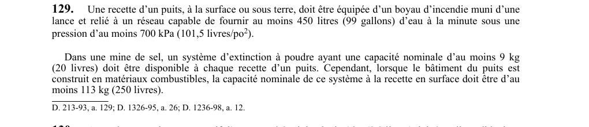

art-129-RSSM : boyau incendie recette puits mine
Un article du wiki ⚖️ Recueil législatif
🌐 LegisQuébec · 📄 PDF officiel
Texte officiel : capture du PDF

🔗 Voir art. 129 RSSM dans le PDF (page 46)
Version : texte officiel du RSSM (RLRQ c. S-2.1, r. 14), à jour au 1er mai 2024 — Éditeur officiel du Québec
En bref
Chaque recette de puits, en surface ou sous terre. Cette obligation vise l'employeur.
- Doit être équipée d'un boyau d'incendie muni d'une lance relié à un réseau capable.
- Réseau fournissant ≥ 450 L (99 gal)/min sous une pression ≥ 700 kPa.
- Mine de sel : système à poudre ≥ 9 kg.
- Si bâtiment du puits en matériaux combustibles : capacité ≥ 113 kg.
Voir aussi
- art. 127 : équipement requis salle refuge · obligation : une salle de refuge doit être construite en matériaux incombustibles avec résistance au feu d'au moins une heure, offrir au moins 1 m² par travailleur, être étanche à la fumée, reliée vocalement à la surface, alimentée en eau potable.
- art. 128 : exigences supplémentaires salles refuge mobiles · obligation : toute salle de refuge aménagée à compter du 1er avril 1993 doit être à plus de 60 m d'un dépôt de matières dangereuses et avoir une hauteur minimale de 2 m.
- art. 130 : extincteurs portatifs emplacements obligatoires · obligation : au moins un extincteur portatif d'une capacité minimale de 4 kg (8,8 lb) doit être disponible dans chacun des 16 emplacements suivants : bâtiment couvrant un orifice en surface, salle de concassage, salle de pompage, station de chargement des accumulateurs, chambre.
- ⚖️ Loi habilitante : LSST
- ↑ Index du bloc : Ventilation et qualité de l'air
Pages qui pointent ici (4)
- art-127-RSSM, équipement requis salle refuge Recueil législatif
- art-128-RSSM, exigences supplémentaires salles refuge mobiles Recueil législatif
- art-130-RSSM, extincteurs portatifs emplacements obligatoires Recueil législatif
- RSSM - Ventilation et qualité de l'air (art. 100-130) Recueil législatif